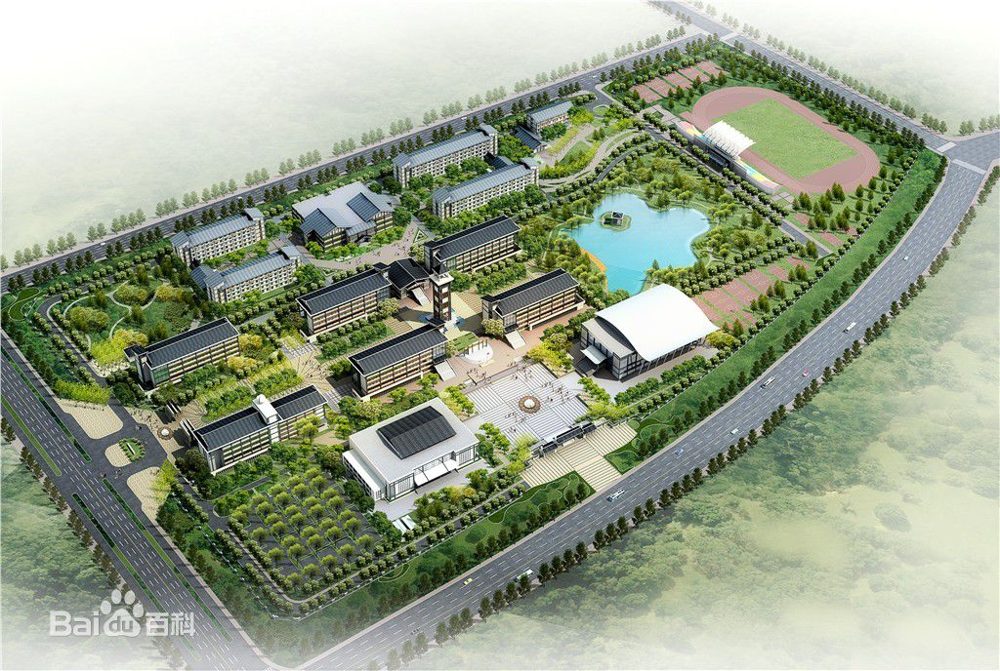
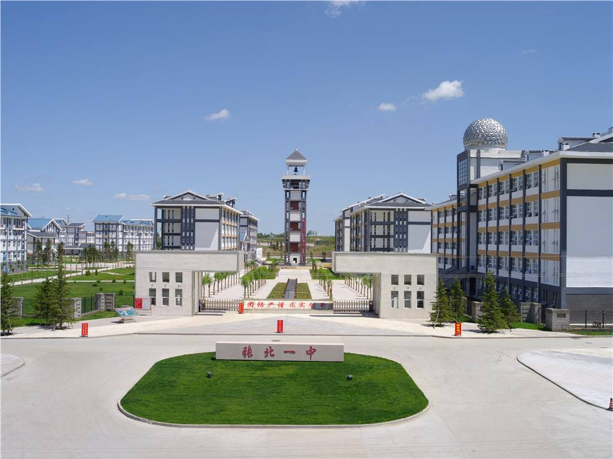

张北一中始建于1952年，是坝上地区建校最早、规模最大的一所全日制普通中学，2005年9月经验收成为省级示范性高中。学校占地190亩，现有教学实验楼一幢、科教楼一幢、学生宿舍楼两幢、图书楼一幢、学生食堂6个，总建筑面积34177平方米。 现有64个教学班，在校学生4000人。现有在编教职工238人，其中校级领导6人，专任教师194人。在专任教师中，有大学本科学历的教师180人，学历达标率93%。专任教师中，特级教师1人，中学高级教师28人，中学一级教师76人，以中青年教师为主。校园分为教学区、行政办公区、学生生活区、后勤服务区、体育运动区和景观绿化一区、二区、三区等八个区。该工程分两期实施，一期工程完成教学楼3栋、图书艺术楼1栋、办公实验楼1栋、学生宿舍楼4栋、学生餐厅1栋、后勤服务楼1栋及钟楼、报告厅等工程；二期工程完成体育馆、礼堂、操场及校园硬化绿化等建设工程。新张北一中充分突出了园林式建筑、书香式校园的建设理念，全力打造设施齐全、功能完备的现代化高标准学校[更多++]

校园文化
- 怀安一中校领导到我校交流学习[4-26]
- 杜局长到一中慰问指导[4-26]
- 60年校庆专题————母校骄傲[3-26]
- 60年校庆专题————六十年大事件[4-26]
- 60年校庆专题————享誉坝上[4-26]
- 60年校庆专题————温馨回忆[4-26]
- 张家口副市长陈冲莅临张北一中调研[4-26]
- 热烈庆祝我校第41届运动会隆重召开[4-26]
校园新闻
- 张北县选聘高中教师补录的公告[6-26]
- 张北县县长李鹏举到我校视察高考备考工作[5-26]
- 张北一中成为河北工业大学“优秀生源地”[5-26]
- 南开大学向我校发来喜报[5-26]
- 张家口副市长陈冲莅临张北一中调研[5-26]
- 张北县李映虹副县长莅临张北一中视察[3-26]
- 张北县第一中学举行高考百日誓师励志大会[3-26]
教师频道
- 县教科局领导慰问张北一中名师[4-26]
- 2016年我校教师所获荣誉统计[4-26]
- 2016年高考表彰会教师代表演讲————张彦波[4-26]
- 2016年高考表彰会教师代表演讲————李建军[4-26]
- 2016年高考表彰会教师代表演讲————杨义胜[4-26]
- 张北一中全体教师奋战扫雪 践行师德修养[4-26]
- 优秀教师评选名单[2-19]
- 学生最爱戴的教师名单[3-21]